電験三種の勉強に追われて延び延びになっていましたが、今月からようやく再開です。
今回は(その３)と(その４)の二回に分けて、小ネタ集の追加とトランジスタ検波一石ラジオの製作を進めていくことにします。
※なお、私は電子工作を始めてから間もない初心者です。このページの信頼性についてはその程度の水準とお考えください。参考にされる際は自己責任でお願いします。
前回ちらっと書いた、「コンデンサをはさむ方」ですが、そちらも試してみました。
必要なものは、家庭用電源プラグと感電防止用のコンデンサです(100pF, AC125V, DC300V 程度以上, …等と言われているようです)。
今回私が用意したのはパナソニックの電力用セラミックコンデンサ ECKATS101MB (100pF, 定格電圧 250VAC, 耐電圧 1500VAC)でした。ネット通販で探したらこれが良さそうだったので。
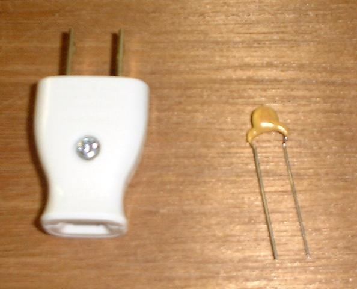
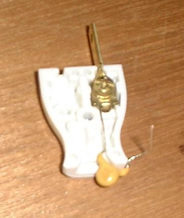
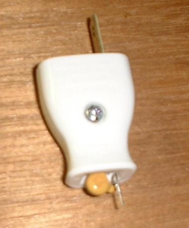
まず、安全のため、プラグの片方の金具を取り外します。そして、残った方の金具にコンデンサを取り付け、プラグを閉める……と、ここで思わぬ誤算。プラグにコンデンサが入りきりません。
仕方がないのでコンデンサ本体がプラグからちょっとはみ出したような形になってしまいました。入れ方が悪いのだろうか？ それとも、もっと大きなプラグを用意するべきだったか…？
使用するときは念のため金属の部分を直に触れないようにした方が良いでしょう。
使用方法については次節の写真を参照してください。
(追記) その後、コンデンサをプラグに収めることに成功しました。
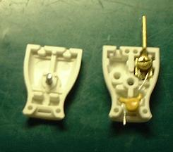
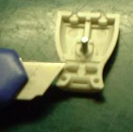
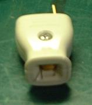
左から順に、(1) やっぱり入れ方の問題 (2) 上蓋の出っ張りを削る (3) 入った。
※次のページを参考にさせていただきました: Kiyoyuki's Craft Room
上記サイトの中にある、金城清幸氏の考案による「簡易アンテナチェッカー」を作ってみました。次の回路図はほとんど丸写しです。
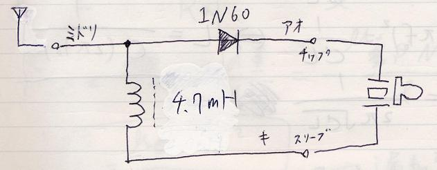
アンテナから信号を受信すると、高周波成分はチョークコイルの方には行かず(まさにそのためにコイルを置くわけです)、そのままダイオードで検波されてクリスタルイヤホンを鳴らす…という、シンプルな構造です(そういえば、以前扱った「大人の科学マガジン Vol.4」の増幅回路にも似たような仕組みが応用されていましたね)。
同調回路がないので全てのＡＭラジオ放送が混じってしまいますが、ある程度アンテナが良ければ増幅なしで(電池を使わずに)聞くことができます。
なお、「チップ」「スリーブ」というのは、モノラルジャックに接続するためのメモです(前回の「フォーンプラグ」の節を参照)。
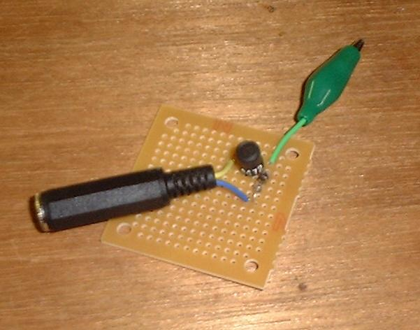
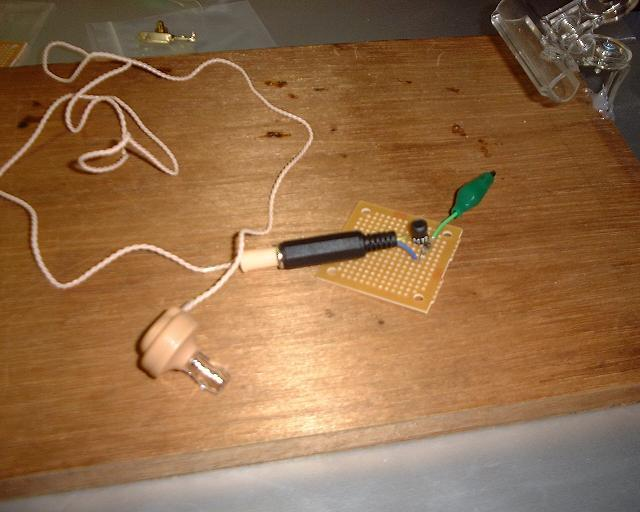
上の写真は今回の完成図です。実はゲルマニウムダイオードのアノードとカソードの向きが回路図とは逆になっていますが、この場合はどちらでもかまいません。使いやすいようにアンテナ側にはミノムシクリップをつけてみました。
モノラルジャックにプラグ付きクリスタルイヤホンを接続して使います。
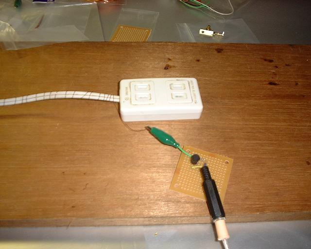
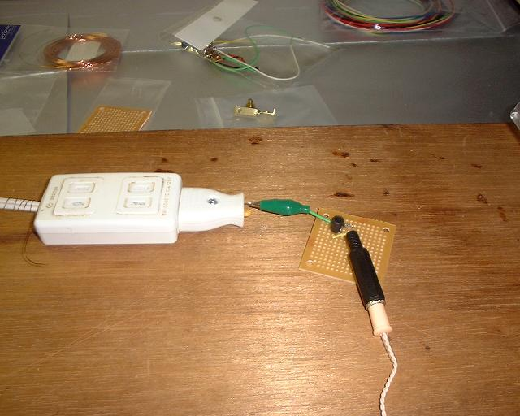
早速、電灯線アンテナで試してみますと……こ、これは面白い！！
たったこれだけでちゃんとラジオ放送が聞こえるとは驚きです。
ちなみに左の電灯線アンテナは前回とは巻く位置が違いますが、こちらの方が使いやすかったです。
また、今回(次回も、ですが)二種類の電灯線アンテナを比較してみたところ、予想に反して違いは感じられませんでした(どっちも良いアンテナになっているようです)。きちんと計測すれば違いが出てくるのかもしれませんが、聞いた感じではほとんど変わりません。
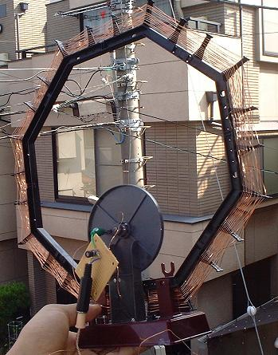
それから、ついでに「大人の科学マガジン Vol. 4」のループアンテナでも試してみました。こちらは同調回路に接続しているので、ほとんど基本構成のゲルマラジオそのものと化しています。選局もできますし、写真のように窓からつきだして聞けば、電池なしでもけっこう良く聞こえます。
このキットについていたゲルマニウムダイオードと増幅回路は既に(その１)で私の習作ラジオの餌食となってしまい、残ったループアンテナは眠ったままになっていましたが、また別の機会に活用したくなってきました。(前に「かさばる」とか言ってゴメンナサイ…。)
{kind=link}
{kind=link}
{kind=link}
{kind=link}
{kind=link}
{kind=link}
{kind=link}
{kind=link}
{kind=link}
{kind=link}
{kind=link}
{kind=link}